Local names help
+0.036
CosSim, L0 → L1
Street and neighborhood names raise similarity to the target panel for all six generators (95% CI 0.029 to 0.042).
Prompt conditioningNeurIPS 2026 · Track on Evaluations and Datasets
Overview
A text-to-image model can render a believable “street in New York City” from a broad city stereotype. Common metrics measure image quality or text alignment; without real images of the requested place and its neighbors, they cannot show whether an image resembles that place. GeoFidelity-Bench compares generated street views with real Mapillary panels of the requested block and with panels of other blocks in the same city.
Local names help
+0.036
CosSim, L0 → L1
Street and neighborhood names raise similarity to the target panel for all six generators (95% CI 0.029 to 0.042).
Prompt conditioningCoordinates add little
+0.004
CosSim, L1 → L2
Raw GPS coordinates written into the prompt give a small, uneven gain. Only 14 of 25 cities improve.
Prompt conditioningThe block is often missed
40% vs 86% real
top-1 retrieval, L1 prompts
Generated images rank their target block first in 40% of cases. Held-out real images of the same block do so in 86%.
Model comparisonCLIP score is no proxy
0.51
AUROC, CLIP vs retrieval
Prompt alignment predicts whether all four images retrieve the target block at chance level (95% CI 0.44 to 0.57).
Text alignmentText-to-image models can generate plausible street scenes from prompts such as “a street in New York City,” but it remains unclear whether these images resemble the requested place or show a generic city appearance. Commonly used evaluation metrics mainly measure image quality or text alignment and do not directly assess geographic fidelity. We introduce GeoFidelity-Bench, a benchmark for evaluating whether generated street-view images match a target location at the level of named street blocks. The benchmark contains 112 street blocks from 25 cities across six continents, each paired with a panel of real Mapillary images and geographic metadata. From this metadata we build prompts with the city only, with street and neighborhood names, and with these names plus raw GPS coordinates. Across six open-weight text-to-image models, street and neighborhood names improve similarity to the target location, while raw GPS coordinates add only a small and uneven gain. Control prompts that swap in the names of other blocks while keeping the city fixed reduce retrieval accuracy, with larger decreases when the neighborhood name or both names are replaced. Generated images also distinguish their target blocks from local alternatives less reliably than held-out real images. CLIP alignment between generated images and their prompts is nearly uninformative about whether the images achieve block-level geographic fidelity. GeoFidelity-Bench provides a controlled testbed for studying location-conditioned generation and for measuring progress beyond generic city-level plausibility.
Benchmark paper §3
Each target is a named OpenStreetMap street block. Its geometry selects the Mapillary images that form the reference panel, and its metadata fills three prompt levels. Every generator produces four images per block and prompt level, and shared vision encoders compare that generated panel with the target panel and with the panels of related blocks.
Reference panel and generated panel
The same blocks as in Figure 1, at a larger size. A reference panel keeps at least 25 real images of the block (67.5 on average); three are shown here. The generated panel holds the four SDXL images for the L1 prompt of that block.
Mapillary reference panel· real images
Generated panel· SDXL, L1 prompt
Mapillary reference panel· real images
Generated panel· SDXL, L1 prompt
Mapillary reference panel· real images
Generated panel· SDXL, L1 prompt
Table 1
Blocks are named OSM highway=* ways within 6 km of each city center, stratified into major, residential, pedestrian, and tertiary roads. Ways longer than 2 km are truncated, and block centroids are at least 400 m apart. Mapillary images along each block pass fixed camera, daylight, spatial, scene-content, and image-quality filters. Four images per block are held out as real queries; the rest form the evaluation panel.
Table 2 · prompt templates
Each level adds location information to the same sentence. Highlighted text is what the level adds.
A street-level photograph taken in city, country.
A street-level photograph taken on street in the neighborhood district of city, country.
A street-level photograph taken on street in the neighborhood district of city, country, near GPS coordinates (lat, lon).
Every prompt continues with “The image shows a typical street scene with buildings, roads, and urban environment characteristic of this location.” (this block at L1 and L2) and ends with “Photorealistic, daytime, clear weather.” Coordinates are the block centroid written to four decimals. All generators except the two FLUX models also receive a shared negative prompt.
Same-city controls
Controls keep the L1 template, city, and country, and replace local names with those of another benchmark block, preferring the same city and road stratum. If the correct names matter, controls should score worse than L1.
… taken on streetanother block’s street in the neighborhood district of city, country.
Wrong street
… taken on street in the neighborhoodanother block’s neighborhood district of city, country.
Shuffled neighborhood
… taken on streetanother street in the neighborhoodanother neighborhood district of city, country.
Wrong street and neighborhood
Retrieval gallery
Each generated image ranks the mean embeddings of these panels by cosine similarity. The same-city negatives test whether an image matches its street better than plausible streets nearby; the other-city negatives test coarser geographic appearance. Negatives are fixed per target and shared by all models and prompt conditions.
Target block
The requested block’s reference panel
Same city · 1
Another block in the target city
Same city · 2
A second block in the target city
Same driving side
A block in another city that drives on the same side
Random city
A block in a random other city
Appendix G · city list
Reference counts come from Mapillary contributions and OSM naming density. Tokyo holds 12.0% of all reference assignments and New York 10.1%, while Berlin, Melbourne, and Nairobi keep one block each. City-balanced estimates in the paper give every city equal weight.
Reference assignments per city
Bar length is the number of block–image assignments; the figure after it is the number of blocks.
Metrics paper §4
Let Xg be the generated images for a block and Xr its reference panel. CosSim is the main score. The other quantities expose different ways a generated panel can fail.
Does the generated panel look like the target block?
Cosine similarity between the mean DINOv2 embeddings of the generated panel and the reference panel. Averaging gives every image equal weight within its panel.
How far apart are the two embedding distributions?
Unbiased squared estimate with an RBF kernel: kgg and krr average over distinct pairs within a set, kgr over all cross pairs. γ is the reciprocal of the median positive squared distance.
Exposes distribution drift
Does the set match the panel without losing variety?
Diversity-Calibrated Set Fidelity adds a penalty when generated images are less diverse than the reference panel. Div is the mean cosine distance between distinct images in a panel.
Exposes mode collapse or drift
Is the mix of road, sky, and buildings right?
Geo-Attribute Agreement Score compares 10-bin histograms of pixel ratios for eight groups: road, sidewalk, building, vegetation, sky, pole, sign, and vehicle.
Exposes wrong semantic composition
Is the target ranked above nearby alternatives?
rb,i is the rank of the target panel for generated image i (n = 4). The local margin is the similarity to the target minus the larger of the two same-city similarities.
Exposes confusion with hard negatives
Prompt and control comparisons are paired by model and block (672 matched pairs per condition), with 95% intervals from 5,000 bootstrap resamples. City-balanced estimates average within each city first.
Results paper §6
SDXL, Stable Diffusion 3.5 Large, FLUX.1-dev, FLUX.1-schnell, PixArt-Σ, and HunyuanDiT each generate four 1024 × 1024 images per block under every prompt condition.
§6.1 · Table 4
Held-out real images are much closer to their own block (0.734) than to the two same-city alternatives (0.557 and 0.526), so the panels carry block-specific appearance. Generated L1 panels are almost as close to the first same-city alternative (0.449) as to the target (0.451).
Similarity of a query panel to each candidate panel
Mean DINOv2 image-to-panel cosine similarity, averaged over blocks where the candidate exists
| Query set | Same block | Same city (1) | Same city (2) | Same drive | Random |
|---|---|---|---|---|---|
| Held-out real | 0.734 | 0.557 | 0.526 | 0.193 | 0.204 |
| Six-generator mean | 0.451 | 0.449 | 0.426 | 0.143 | 0.150 |
§6.2 · Tables 5 and 6
Moving from L0 to L1 raises mean CosSim by +0.036 over 672 matched (model, block) pairs, and 21 of 25 cities improve. Appending raw GPS coordinates changes it by only +0.004, and 14 of 25 cities improve.
CosSim by prompt level
Higher is better. Hover a model to trace it.
| Model | L0 | L1 | L2 |
|---|---|---|---|
| SDXL | 0.512 | 0.536 | 0.536 |
| SD 3.5 Large | 0.432 | 0.515 | 0.516 |
| FLUX.1-dev | 0.456 | 0.484 | 0.496 |
| FLUX.1-schnell | 0.465 | 0.499 | 0.507 |
| PixArt-Σ | 0.459 | 0.486 | 0.489 |
| HunyuanDiT | 0.458 | 0.477 | 0.478 |
Paired change in CosSim
Matched (model, block) pairs, and the same change with every city weighted equally
| Comparison | Matched Δ [95% CI] | Positive pairs |
|---|---|---|
| L1 − L0 | +0.036 [0.029, 0.042] | 438 / 672 |
| L2 − L1 | +0.004 [0.001, 0.008] | 382 / 672 |
| Comparison | City-balanced Δ [95% CI] | Cities up |
|---|---|---|
| L1 − L0 | +0.042 [0.025, 0.060] | 21 / 25 |
| L2 − L1 | +0.006 [0.001, 0.012] | 14 / 25 |
Leaving out one city at a time, the L1 − L0 gain stays positive in all 25 repetitions: CosSim +0.030 to +0.038, retrieval +0.040 to +0.054 (Appendix D).
§6.3 · Table 7
Retrieval accuracy is lower under all three controls than under L1, most of all when both names are replaced. Swapping only the street name leaves CosSim almost unchanged (+0.001), while a wrong neighborhood or two wrong names lower it by 0.007 and 0.011.
Benefit of the correct names over each control
L1 minus control over 672 matched pairs, with 95% bootstrap intervals. Right of zero means L1 is better.
| Control prompt | CosSim | CosSim benefit [95% CI] | Retrieval | Retrieval benefit [95% CI] |
|---|---|---|---|---|
| Wrong street | 0.498 | +0.001 [−0.004, 0.006] | 0.373 | +0.025 [0.008, 0.042] |
| Shuffled neighborhood | 0.492 | +0.007 [0.003, 0.012] | 0.361 | +0.038 [0.020, 0.057] |
| Wrong street and neighborhood | 0.488 | +0.011 [0.005, 0.017] | 0.344 | +0.054 [0.034, 0.074] |
§6.4 · Tables 8 and 9
For the 672 L1 panels, CLIP ViT-B/32 similarity with the exact generation prompt is weakly related to every geographic outcome, and it separates panels whose four images all retrieve the target no better than chance. A location-only text (“A photo of {street} in the {neighborhood} district of {city}, {country}.”) tracks CosSim somewhat better but still says little about retrieval.
CLIP score against geographic outcomes
Spearman ρ and AUROC with 95% block-bootstrap intervals
| Geographic outcome | Exact prompt | Location-only text |
|---|---|---|
| Target CosSim (ρ) | 0.112 [−0.008, 0.231] | 0.238 [0.114, 0.353] |
| Local margin (ρ) | 0.005 [−0.117, 0.126] | 0.123 [−0.012, 0.249] |
| Retrieval accuracy (ρ) | 0.041 [−0.068, 0.149] | 0.105 [−0.019, 0.222] |
| All-four retrieval (AUROC) | 0.508 [0.442, 0.572] | 0.579 [0.505, 0.652] |
Panels where no image finds the target
Share of L1 panels, grouped by exact-prompt CLIP score
| Panels | Exact prompt | Location-only |
|---|---|---|
| Lowest CLIP quartile | 53.0% | 54.2% |
| All 672 panels | 47.3% | 47.3% |
| Highest CLIP quartile (168) | 46.4% | 44.0% |
CLIP barely reacts to the local names
Mean drop in CLIP score when the scoring text names the wrong street or neighborhood. Generated images are held fixed (Table 9).
| Wrong name | Drop [95% CI] | Panels |
|---|---|---|
| Wrong street | 0.0018 [0.0009, 0.0027] | 60.1% |
| Shuffled neighborhood | 0.0021 [0.0010, 0.0033] | 58.0% |
| Both local names | 0.0047 [0.0030, 0.0064] | 64.6% |
“Panels” is the share of panels where the correct text scores higher. In 35% to 42% of panels the altered text scores at least as high.
§6.5 · Table 10
SDXL has the best generator scores on CosSim, DCSF, MMD, and GAAS, and PixArt-Σ the highest generator retrieval accuracy. Held-out real images beat all six generators on every metric. Real-image anchors from other blocks show that CosSim and retrieval measure different things.
L1 leaderboard with real-image anchors
Select a column to sort the generators. A dot marks the best generator on each metric.
| Model | |||||
|---|---|---|---|---|---|
| Generators · L1 named-block prompts | |||||
| 1SDXL | |||||
| 2SD 3.5 Large | |||||
| 3FLUX.1-schnell | |||||
| 4PixArt-Σ | |||||
| 5FLUX.1-dev | |||||
| 6HunyuanDiT | |||||
| Six-model mean | |||||
| Real-image anchors | |||||
| Held-out Real | |||||
| Random-Same-Country | |||||
| Random-Global | |||||
Held-out Real uses the four real images held out from each target block. Random-Same-Country and Random-Global are panels of four real images sampled from other blocks in the same country and from all other blocks.
Looking like the area is not the same as finding the block
Random real images from the same country reach CosSim 0.710, above every generator, yet retrieve the target only 25.9% of the time.
§6.6 · Figure 2
City-only (L0) prompts carry no block information, so these images show what each model associates with a city. They reproduce tropical vegetation, European street widths, dense high-rise backgrounds, or Tokyo-style sign density, and often miss the details that make a block recognizable, such as curb type, lane markings, and storefronts. Names at L1 move broad scene composition slightly closer to the references (GAAS −0.0089 over road, building, vegetation, and sky).
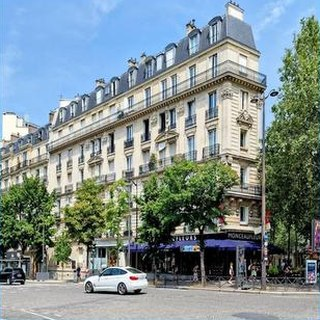
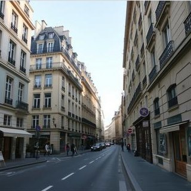
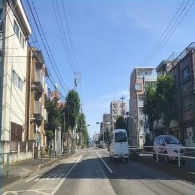
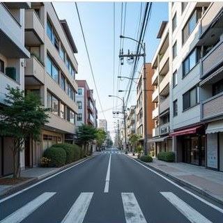
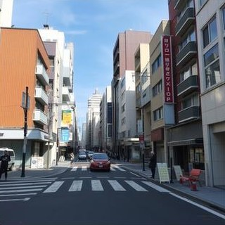
New York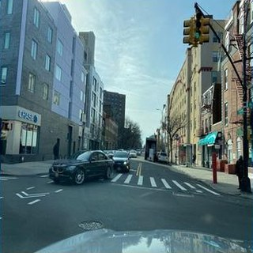
Cairo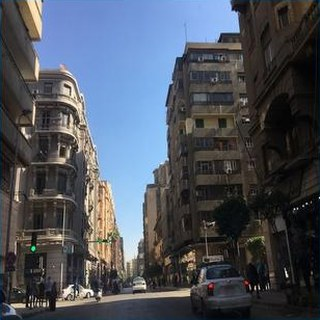
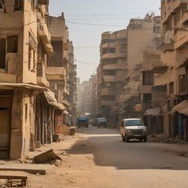
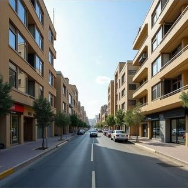
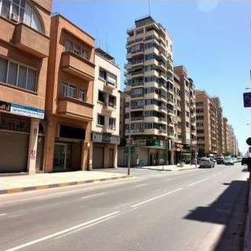
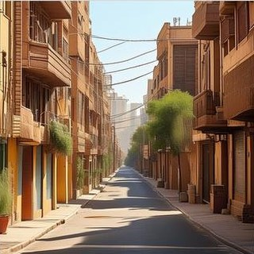
Bangkok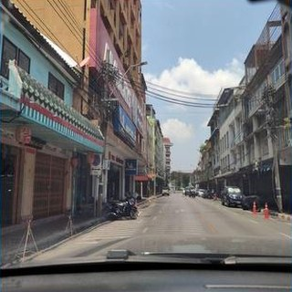
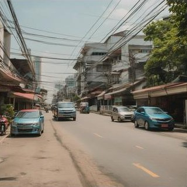
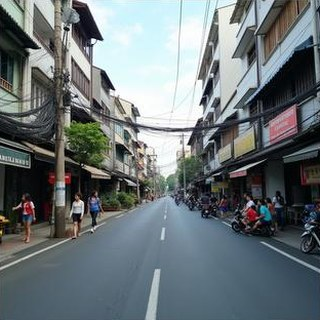
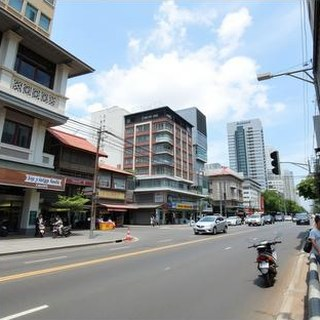
Buenos Aires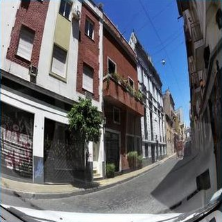
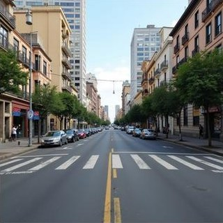
Reference set appendix C
Each city is represented by the mean DINOv2 embedding of its reference images. The mean off-diagonal cosine similarity is 0.284, and visual distance grows only weakly with geographic distance (Spearman ρ = 0.180 over 300 city pairs, p = 1.8 × 10−3).
Cross-city visual similarity
Cosine similarity between city-mean embeddings of real references. Hover a cell for the pair.
| City | AMS | BKK | BER | BOG | BUE | CAI | CPT | DXB | IST | LON | MEL | MEX | BOM | NBO | NYC | PAR | ROM | SFO | SAO | SEL | SHA | SIN | SYD | TYO | YTO |
|---|---|---|---|---|---|---|---|---|---|---|---|---|---|---|---|---|---|---|---|---|---|---|---|---|---|
| Amsterdam | 1.00 | 0.11 | 0.50 | 0.04 | 0.09 | 0.24 | 0.27 | 0.17 | 0.20 | 0.40 | 0.00 | 0.05 | 0.17 | 0.16 | 0.21 | 0.24 | 0.29 | 0.06 | 0.03 | 0.20 | 0.24 | 0.15 | 0.15 | 0.10 | 0.18 |
| Bangkok | 0.11 | 1.00 | 0.09 | 0.31 | 0.35 | 0.42 | 0.32 | 0.24 | 0.33 | 0.07 | 0.18 | 0.33 | 0.51 | 0.57 | 0.20 | 0.07 | 0.31 | 0.05 | 0.36 | 0.23 | 0.29 | 0.60 | 0.23 | 0.07 | 0.28 |
| Berlin | 0.50 | 0.09 | 1.00 | 0.04 | 0.15 | 0.22 | 0.26 | 0.21 | 0.27 | 0.31 | −0.02 | 0.07 | 0.10 | 0.08 | 0.16 | 0.34 | 0.37 | −0.01 | 0.00 | 0.37 | 0.24 | 0.11 | 0.12 | 0.10 | 0.20 |
| Bogota | 0.04 | 0.31 | 0.04 | 1.00 | 0.78 | 0.19 | 0.70 | 0.18 | 0.24 | 0.17 | 0.54 | 0.80 | 0.24 | 0.32 | 0.21 | 0.12 | 0.21 | 0.44 | 0.64 | 0.33 | 0.23 | 0.67 | 0.45 | 0.13 | 0.19 |
| Buenos Aires | 0.09 | 0.35 | 0.15 | 0.78 | 1.00 | 0.29 | 0.76 | 0.20 | 0.34 | 0.20 | 0.54 | 0.76 | 0.20 | 0.24 | 0.34 | 0.28 | 0.29 | 0.23 | 0.68 | 0.35 | 0.29 | 0.66 | 0.48 | 0.06 | 0.27 |
| Cairo | 0.24 | 0.42 | 0.22 | 0.19 | 0.29 | 1.00 | 0.40 | 0.51 | 0.65 | 0.16 | 0.10 | 0.21 | 0.49 | 0.58 | 0.39 | 0.25 | 0.66 | 0.17 | 0.21 | 0.29 | 0.38 | 0.38 | 0.30 | 0.05 | 0.46 |
| Cape Town | 0.27 | 0.32 | 0.26 | 0.70 | 0.76 | 0.40 | 1.00 | 0.30 | 0.42 | 0.29 | 0.51 | 0.72 | 0.28 | 0.31 | 0.32 | 0.29 | 0.41 | 0.39 | 0.58 | 0.43 | 0.36 | 0.70 | 0.56 | 0.15 | 0.28 |
| Dubai | 0.17 | 0.24 | 0.21 | 0.18 | 0.20 | 0.51 | 0.30 | 1.00 | 0.28 | 0.14 | 0.07 | 0.18 | 0.34 | 0.38 | 0.10 | 0.15 | 0.29 | 0.10 | 0.09 | 0.32 | 0.25 | 0.26 | 0.12 | 0.02 | 0.20 |
| Istanbul | 0.20 | 0.33 | 0.27 | 0.24 | 0.34 | 0.65 | 0.42 | 0.28 | 1.00 | 0.25 | 0.18 | 0.26 | 0.36 | 0.46 | 0.35 | 0.23 | 0.70 | 0.25 | 0.23 | 0.25 | 0.33 | 0.33 | 0.49 | 0.11 | 0.43 |
| London | 0.40 | 0.07 | 0.31 | 0.17 | 0.20 | 0.16 | 0.29 | 0.14 | 0.25 | 1.00 | 0.11 | 0.16 | 0.16 | 0.21 | 0.22 | 0.32 | 0.23 | 0.08 | 0.10 | 0.34 | 0.20 | 0.21 | 0.24 | 0.08 | 0.15 |
| Melbourne | 0.00 | 0.18 | −0.02 | 0.54 | 0.54 | 0.10 | 0.51 | 0.07 | 0.18 | 0.11 | 1.00 | 0.60 | 0.08 | 0.16 | 0.08 | 0.05 | 0.10 | 0.30 | 0.68 | 0.16 | 0.11 | 0.50 | 0.47 | 0.06 | 0.11 |
| Mexico City | 0.05 | 0.33 | 0.07 | 0.80 | 0.76 | 0.21 | 0.72 | 0.18 | 0.26 | 0.16 | 0.60 | 1.00 | 0.28 | 0.31 | 0.17 | 0.15 | 0.20 | 0.34 | 0.71 | 0.33 | 0.28 | 0.67 | 0.45 | 0.11 | 0.13 |
| Mumbai | 0.17 | 0.51 | 0.10 | 0.24 | 0.20 | 0.49 | 0.28 | 0.34 | 0.36 | 0.16 | 0.08 | 0.28 | 1.00 | 0.70 | 0.16 | 0.10 | 0.42 | 0.11 | 0.32 | 0.30 | 0.53 | 0.53 | 0.20 | 0.10 | 0.17 |
| Nairobi | 0.16 | 0.57 | 0.08 | 0.32 | 0.24 | 0.58 | 0.31 | 0.38 | 0.46 | 0.21 | 0.16 | 0.31 | 0.70 | 1.00 | 0.26 | 0.06 | 0.51 | 0.19 | 0.31 | 0.24 | 0.44 | 0.54 | 0.30 | 0.12 | 0.41 |
| New York | 0.21 | 0.20 | 0.16 | 0.21 | 0.34 | 0.39 | 0.32 | 0.10 | 0.35 | 0.22 | 0.08 | 0.17 | 0.16 | 0.26 | 1.00 | 0.29 | 0.42 | 0.34 | 0.28 | 0.29 | 0.34 | 0.25 | 0.36 | 0.04 | 0.67 |
| Paris | 0.24 | 0.07 | 0.34 | 0.12 | 0.28 | 0.25 | 0.29 | 0.15 | 0.23 | 0.32 | 0.05 | 0.15 | 0.10 | 0.06 | 0.29 | 1.00 | 0.34 | 0.05 | 0.15 | 0.26 | 0.32 | 0.17 | 0.18 | 0.08 | 0.14 |
| Rome | 0.29 | 0.31 | 0.37 | 0.21 | 0.29 | 0.66 | 0.41 | 0.29 | 0.70 | 0.23 | 0.10 | 0.20 | 0.42 | 0.51 | 0.42 | 0.34 | 1.00 | 0.26 | 0.23 | 0.30 | 0.46 | 0.33 | 0.29 | 0.15 | 0.48 |
| San Francisco | 0.06 | 0.05 | −0.01 | 0.44 | 0.23 | 0.17 | 0.39 | 0.10 | 0.25 | 0.08 | 0.30 | 0.34 | 0.11 | 0.19 | 0.34 | 0.05 | 0.26 | 1.00 | 0.28 | 0.17 | 0.16 | 0.27 | 0.40 | 0.19 | 0.34 |
| Sao Paulo | 0.03 | 0.36 | 0.00 | 0.64 | 0.68 | 0.21 | 0.58 | 0.09 | 0.23 | 0.10 | 0.68 | 0.71 | 0.32 | 0.31 | 0.28 | 0.15 | 0.23 | 0.28 | 1.00 | 0.30 | 0.39 | 0.73 | 0.43 | 0.09 | 0.18 |
| Seoul | 0.20 | 0.23 | 0.37 | 0.33 | 0.35 | 0.29 | 0.43 | 0.32 | 0.25 | 0.34 | 0.16 | 0.33 | 0.30 | 0.24 | 0.29 | 0.26 | 0.30 | 0.17 | 0.30 | 1.00 | 0.50 | 0.37 | 0.28 | 0.36 | 0.25 |
| Shanghai | 0.24 | 0.29 | 0.24 | 0.23 | 0.29 | 0.38 | 0.36 | 0.25 | 0.33 | 0.20 | 0.11 | 0.28 | 0.53 | 0.44 | 0.34 | 0.32 | 0.46 | 0.16 | 0.39 | 0.50 | 1.00 | 0.45 | 0.27 | 0.24 | 0.24 |
| Singapore | 0.15 | 0.60 | 0.11 | 0.67 | 0.66 | 0.38 | 0.70 | 0.26 | 0.33 | 0.21 | 0.50 | 0.67 | 0.53 | 0.54 | 0.25 | 0.17 | 0.33 | 0.27 | 0.73 | 0.37 | 0.45 | 1.00 | 0.45 | 0.10 | 0.25 |
| Sydney | 0.15 | 0.23 | 0.12 | 0.45 | 0.48 | 0.30 | 0.56 | 0.12 | 0.49 | 0.24 | 0.47 | 0.45 | 0.20 | 0.30 | 0.36 | 0.18 | 0.29 | 0.40 | 0.43 | 0.28 | 0.27 | 0.45 | 1.00 | 0.11 | 0.35 |
| Tokyo | 0.10 | 0.07 | 0.10 | 0.13 | 0.06 | 0.05 | 0.15 | 0.02 | 0.11 | 0.08 | 0.06 | 0.11 | 0.10 | 0.12 | 0.04 | 0.08 | 0.15 | 0.19 | 0.09 | 0.36 | 0.24 | 0.10 | 0.11 | 1.00 | 0.05 |
| Toronto | 0.18 | 0.28 | 0.20 | 0.19 | 0.27 | 0.46 | 0.28 | 0.20 | 0.43 | 0.15 | 0.11 | 0.13 | 0.17 | 0.41 | 0.67 | 0.14 | 0.48 | 0.34 | 0.18 | 0.25 | 0.24 | 0.25 | 0.35 | 0.05 | 1.00 |
The diagonal is 1 by construction and is left blank. Values are rounded to two decimals, as in the paper figure.
Release
The dataset (version 3.1.0) holds the reference images, the 16,128 generated images for all six prompt conditions, metadata tables with direct image URLs, the archived scores of both scoring sessions, a code archive, and Croissant metadata. This repository holds the curation pipeline, generation wrappers, metrics, and evaluation scripts.
Reference panels, generated images indexed by model, block, and prompt, metadata tables with a download URL for every image, and the archived per-block scores.
moss-vector-714/GeoFidelity-BenchBlock carving, Mapillary download and filtering, deterministic generation for six models, metrics, and the evaluation and control scripts.
tantansir/geofidelity-bench-releaseMachine-readable description of files, record sets, and responsible-AI fields (collection, biases, limitations, intended use).
croissant.jsonSingle images can be read through the URLs in the metadata tables. To run the code, download the release into the repository root so that the relative image paths resolve. The archived scores in results/ reproduce the paper’s tables without running any model. Evaluation runs on CUDA by default (DEVICE in config.py), loads DINOv2 through torch.hub, and segments generated images with Mask2Former for GAAS.
from io import BytesIO
import pandas as pd
import requests
from PIL import Image
base = "https://huggingface.co/datasets/moss-vector-714/GeoFidelity-Bench/resolve/main/"
refs = pd.read_csv(base + "metadata/reference_images.csv", dtype={"image_id": str})
row = refs.iloc[0]
response = requests.get(row.image_url, timeout=60)
response.raise_for_status()
image = Image.open(BytesIO(response.content)).convert("RGB")
# metadata/generated_images.csv has the same image_url column,
# plus model, level, sample_index, and the prompt of every image.git clone https://github.com/tantansir/geofidelity-bench-release.git
cd geofidelity-bench-release
pip install -r requirements.txt
python - <<'EOF'
from huggingface_hub import snapshot_download
snapshot_download(
"moss-vector-714/GeoFidelity-Bench",
repo_type="dataset",
local_dir=".",
ignore_patterns=["README.md", ".gitattributes", "croissant.json"], # keep this repo's copies
# metadata and archived scores only:
# allow_patterns=["metadata/*", "results/*", "data/processed/v3/*"],
)
EOF# The paper's numbers come from two archived sessions in results/:
# prompt ablation (L0, L1, L2, anchors) and controls (with their own L1 run).
# Pair conditions within one session only.
python - <<'EOF'
import pandas as pd
scores = pd.read_csv("results/per_block_scores.csv")
metrics = ["cos_sim", "dcsf", "mmd", "gaas", "retrieval_acc", "mrr"]
print(scores.groupby(["method", "level"])[metrics].mean())
EOF
# Prompt deltas, hierarchy gaps, and rank stability
mkdir -p outputs/eval_v3
cp results/per_block_scores.csv outputs/eval_v3/raw_results.csv
python eval/reviewer_analysis_v3.py
# Paired L1-minus-control effects
python eval/control_ablation_v3.py \
--raw_results results/prompt_controls/control_per_block_scores.csv \
--out_dir outputs/archived_controls# Score one released generator at the three prompt levels. A new run can
# differ slightly from the archived scores; give each run its own --out_dir.
python eval/run_eval_v3.py --methods sdxl_base --levels L0 L1 L2 \
--out_dir outputs/eval_sdxl
# Real-image anchors (oracle_nn is Held-out Real)
python eval/run_eval_v3.py --methods oracle_nn random_same_country random_global \
--levels L1 --out_dir outputs/eval_anchors
# Same-city controls, scored together with L1 and then paired
python eval/run_eval_v3.py --methods sdxl_base \
--levels L1 C_WRONG_STREET C_SHUFFLED_NEIGHBORHOOD C_WRONG_STREET_NEIGHBORHOOD \
--out_dir outputs/eval_controls
python eval/control_ablation_v3.py \
--raw_results outputs/eval_controls/raw_results.csv \
--out_dir outputs/eval_controls/control_ablation# 1. Write four images per block and prompt level. Prompts per (block, level)
# are in metadata/generated_images.csv; templates are in config.py.
generations_v3/my_model/L1/<block_id>/00.jpg ... 03.jpg
# 2. Score them against the reference panels and retrieval galleries
python eval/run_eval_v3.py --methods my_model --levels L0 L1 L2 \
--out_dir outputs/eval_my_model
# Per-block rows: outputs/eval_my_model/raw_results.csv
# Means by level: outputs/eval_my_model/summary_by_method_level.csvScope paper §7
Reference coverage follows Mapillary contributions and OSM naming density. Cities differ in image counts, headings, capture dates, and devices, and the daylight and scene filters narrow the streetscapes represented. Informal settlements and peri-urban areas are under-represented.
L2 measures whether text-only generators use coordinates written in the prompt. Models that take coordinates, maps, satellite images, or retrieved photos as input can be scored with the same panels and galleries.
The metrics measure visual agreement with reference panels, not the state of a street at a given time. Values depend on DINOv2 and Mask2Former; with SegFormer instead, GAAS keeps 11 of 15 pairwise model orderings.
Generated location images can reinforce place stereotypes or mislead when shown as photographic evidence. The benchmark uses public Mapillary imagery with the platform’s privacy processing and is meant for model comparison and prompt-conditioning studies. It has no established validity for identifying people, surveillance, or reconstructing events.
Citation
@inproceedings{tan2026geofidelity,
title={GeoFidelity-Bench: Evaluating Block-Conditioned Geographic Fidelity in Text-to-Image Street-View Generation},
author={Tan, Kaizhen},
booktitle={Advances in Neural Information Processing Systems},
year={2026}
}